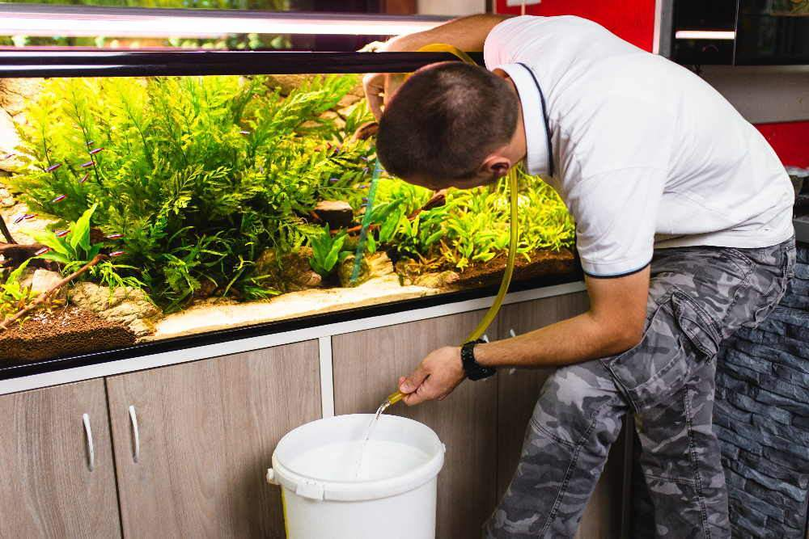
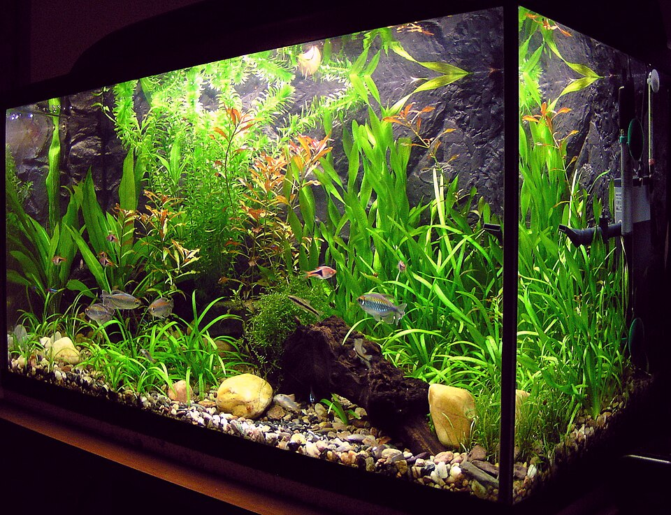
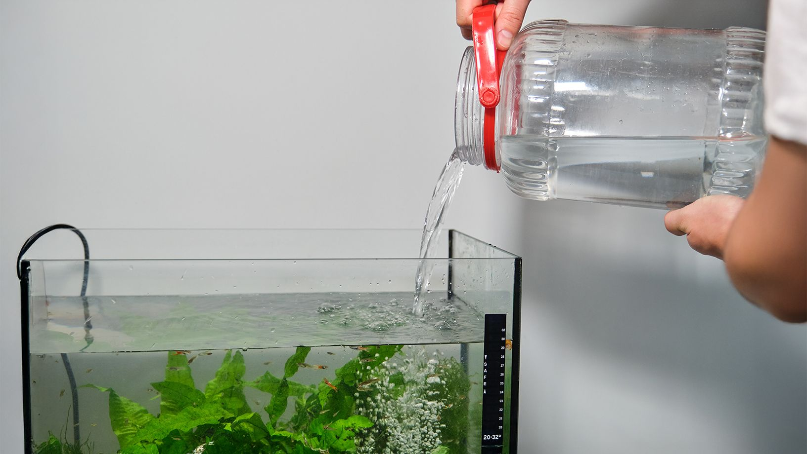

How Often Should You Clean Your Aquarium?
Learn the ideal aquarium cleaning schedule for healthy fish.
Read More →Professional aquarium cleaning, algae removal, filter maintenance and fish-safe cleaning services for homes and offices in Bangalore.
Reliable aquarium maintenance solutions designed for homes, offices and commercial spaces.
Complete aquarium deep cleaning with glass polishing, substrate vacuuming and waste removal for crystal clear water.
Professional filter maintenance and flow optimization to maintain healthy biological filtration and stable water quality.
Basic fish wellness observation and aquarium condition assessment to help identify visible stress or imbalance.
Aquarium care tips and maintenance guides

Learn the ideal aquarium cleaning schedule for healthy fish.
Read More →

Trusted by aquarium owners across the city
Very professional cleaning service. Aquarium looks crystal clear after every visit.
Raaj, Omni Tech Solutions.Good fish handling and proper cleaning process. Highly recommended.
Manu, BanashankariReliable maintenance service for office aquariums and planted tanks.
Vinod S.